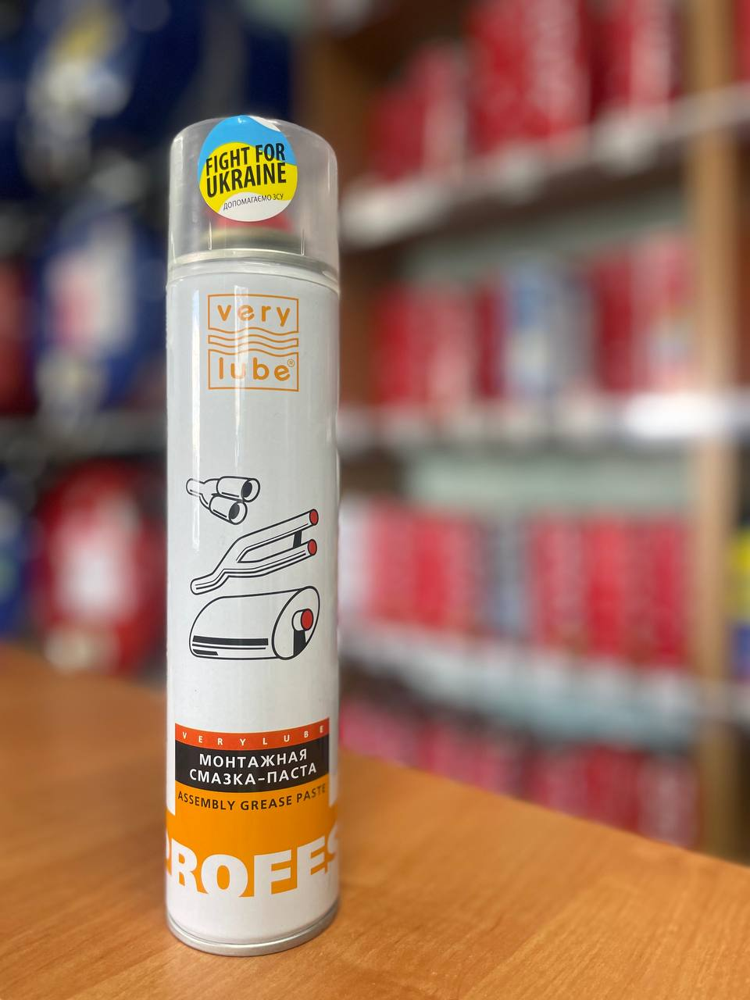

Об’єм: 320 мл
Монтажна паста VeryLube — це спеціалізоване мастило, створене для вузлів та з’єднань, які працюють під дією високих температур. Забезпечує легкий монтаж, а при необхідності спрощує подальше розбирання деталей без пошкоджень. Має відмінні антипригарні властивості та захищає металеві елементи від корозії.
Якщо ви хочете дізнатись про наявність товару, отримати консультацію або поставити будь-які питання щодо продукції XADO — ми завжди готові допомогти.
Телефон для зв’язку: +38 (050) 585-07-26
Ми допоможемо обрати саме те, що потрібно вашому автомобілю.
Звертайтеся, ми цінуємо кожного клієнта!